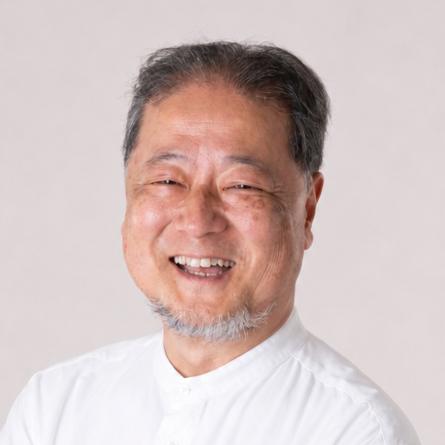

滋賀・関西拠点 / 全国オンライン対応
ものづくり企業の強みを、
価値と次の一手につなげる。
製造業の現場を知る中小企業診断士が、
まだ言葉になっていない強みや事業の種を見つけ、
"選ばれる理由"の言語化、価格転嫁、販路開拓、生成AI活用を伴走支援します。
技術、こだわり、対応力、品質、納期。
ものづくり企業には、まだ言葉になっていない強みや、これから育つ事業の種があります。
オカピー・パートナーズは、その強みを顧客に伝わる価値へ変え、
営業・価格改定・販路開拓で使える「次の一手」に落とし込みます。
Services
オカピー・パートナーズができること
ものづくり企業の強みを見つけ、顧客に伝わる価値へ変え、営業・価格・販路・生成AI活用の次の一手に落とし込みます。
選ばれる理由づくり支援
自社では当たり前になっている技術、対応力、品質、納期対応、顧客への向き合い方を棚卸しし、顧客に伝わる「選ばれる理由」として整理します。営業資料、ホームページ、商談トークに使える言葉へ落とし込みます。
- 強みの棚卸し: 顧客に選ばれている理由の整理
- 言語化: 営業資料・Web・商談トーク用のメッセージ作成
- 事業の種: まだ活かしきれていない技術・商品・顧客接点の発見
価格転嫁・価格改定説明支援
値上げの理由、顧客別の伝え方、価格改定文案、交渉前の論点を整理します。安売りで終わらせず、納得感のある説明で、利益を残すための伝え方を一緒につくります。
- 理由整理: 値上げの根拠を顧客目線で構造化
- 説明設計: 顧客別の対応方針・改定文案の作成
- 交渉準備: 想定される反応への事前対策
販路開拓・次の一手づくり支援
既存顧客・既存商品の延長だけでなく、どの顧客に、どの価値を、どう届けるかを整理します。新たな受注領域、営業の打ち手、今後90日間の実行プランを具体化します。
- ターゲット整理: 製造業の商流を踏まえた顧客・市場の選定
- 打ち手設計: 展示会・Web・紹介など営業チャネルの具体化
- 実行計画: 90日間の行動計画と優先順位の策定
生成AI活用・実行支援
生成AIを、文章作成だけでなく、強みの整理、営業資料づくり、価格改定説明、情報発信、業務改善に活用できる状態へ伴走します。難しいツール導入ではなく、明日から使える小さな実践から始めます。
- 業務活用: 資料作成・情報発信・提案書づくりへのAI組み込み
- 内製化: 「自分たちで使える」状態への伴走
- 実践重視: 座学ではなくハンズオン中心の導入支援
研修・セミナーにも対応しています
生成AI活用、価格転嫁、販路開拓、情報発信、製造業DXなどをテーマに、
商工会議所・支援機関・企業向けの研修やセミナーにも対応しています。
専門用語に寄りすぎず、事例と実演を交えながら、「明日から試せる」内容としてお伝えします。
大津商工会議所 生成AI活用セミナー / 八日市商工会議所 生成AI活用 /
長浜商工会議所 プレスリリース作成 / ものづくり新聞 製造DX研修 ほか
通算50回以上の登壇実績（前職含む）
対応テーマ例
- 生成AI活用（入門〜業務実装、ハンズオン形式）
- 価格転嫁・価格改定の進め方
- メディアに伝わるプレスリリース作成
- 製造業DX・工場セキュリティ入門
- 販路開拓・情報発信の実践
ご依頼の流れ
お問い合わせ → 内容・対象者のヒアリング（オンライン30分） → 企画書・お見積りのご提出 → 実施
※ 形式（対面／オンライン）、時間（60分〜半日）、対象者レベルに応じてカスタマイズします。
Support Process
強みを見つけ、価値に変え、次の一手にする進め方
「一方的な提案」ではなく、経営者と同じ目線で課題を解きほぐす5つのステップ
誠実に聴く
経営者の思い、現場の実感、これまでの歩み、今の迷いを丁寧に伺います。モヤモヤした状態でも構いません。
強みと種を見つける
顧客に選ばれてきた理由、まだ活かしきれていない技術・対応力・人材・商品を一緒に棚卸しします。
価値に変える
強みを顧客目線の価値に変換し、営業資料・Web・価格改定説明・商談トークに使える言葉へ整えます。
動ける形にする
「やるべきこと」ではなく、「これならできそう」と思える具体策に落とし込みます。必要に応じて生成AIも活用します。
次の一手を一緒につくる
90日間の行動計画、優先順位、役割分担を整理し、実行に移せる状態をつくります。
Works & Experience
実績・事例
Insights from the Field
現場発。経営と生成AIの実務ノート
製造業の現場経験と生成AIの実践から得た気づきを、noteで発信しています。
LINEにレシートを送ったら、10秒で経費登録できました
LINEでレシートの写真を送るだけで経費登録が完了し、音声メモを送れば商談記録にもなる。そんな業務アプリを、生成AIとの対話だけで作りました。新しいアプリを覚えなくても、普段使っているLINEの延長線上で仕事が少し便利になります。中小企業のDXは、こんな小さな一歩から始められます。
→ 記事を読む 製造業の知見「現場を知らないコンサルはDXを語れない」は本当か？
「現場を知らないコンサルに何がわかる」——製造業の経営者なら一度は思ったことがあるのではないでしょうか。オムロンで34年間、工場の現場と向き合ってきた診断士が、この問いに正面から答えます。DXの本質は技術導入ではなく、自社の強みをどう活かすか。その見つけ方を語ります。
→ 記事を読む 価格転嫁値段を決めた経験が、今の支援に生きている
「値決めは経営」という稲盛和夫さんの言葉を、身をもって実感してきました。PLCのプロダクトマネージャーとして値付けにギリギリまで悩んだ経験が、今、中小企業の値上げ・価格改定の支援に直結しています。値上げしたいけど怖い。その気持ちがわかるからこそ、一緒に考えられます。
→ 記事を読む 支援の現場支援先の経営者からのメールで、新幹線の中で涙が滲んだ。
支援先の経営者から届いた一通のメールに、思わず新幹線の中で「ヨッシャー！」と叫びそうになりました。大きな案件ではありません。でも、経営者が自分の力で一歩を踏み出した瞬間に立ち会えること。それが伴走支援の醍醐味だと、改めて感じた日のことを書きました。
→ 記事を読む 独立のリアル独立開業33日目、生成AIセミナーで初めての売り上げが立った日
60歳で独立して33日間、売り上げになる仕事がゼロの日々が続いていました。そんな中でようやく立った初受注は、漬物協同組合での生成AIセミナーの講師でした。不安だらけの船出と、最初の一歩を踏み出せた日のことを、正直に綴っています。
→ 記事を読むOur Values
大切にしていること
答えを押しつける支援ではありません。
まず経営者の話を誠実に聴き、まだ言葉になっていない強みや可能性を一緒に見つけます。
そして、それを顧客に伝わる価値へ整理し、実際に動ける形に落とし込みます。
誠実に聴く
まず受け止める。できないことは正直に言う。
強みを価値に変える
見えていない良さを見つけ、構造化し、伝わる形にする。
動ける形にする
助言で終わらない。「これならできそう」まで落とし、実際の一歩に変える。
About Me
現場を知り尽くした、
実務家コンサルタント

岡 実 (Minoru OKA)
オカピー・パートナーズ 代表
製造業の現場と、経営の言葉をつなぐ実務家コンサルタント
オムロンで34年間、FA機器の商品企画・マーケティングに携わり、製造業の現場、技術、商流、顧客ニーズに向き合ってきました。私の強みは、現場で培われた技術やこだわりを、経営・営業・価格・販路の言葉に翻訳できることです。
私の最大の強みは、製造業の「現場」と「お金まわり（売り方）」の両方の言語を話せることです。
理屈やフレームワークだけでは、現場は絶対に動かない。この教訓を胸に、滋賀県（琵琶湖のほとり）を拠点として、ものづくり企業の経営者と同じ目線に立つ実務家コンサルタントとして活動しています。
もうひとつの強み――「生成AI」を自ら使い倒す60歳。
還暦を迎えた現在も、生成AIを自らの実務に徹底的に組み込んでいます。前職時代には自社メディアの記事制作にAIを本格活用し、ウェブアクセスを3倍に伸ばした実績があります。商工会議所での研修講師や国内大手メディア「MONOist」での連載寄稿など、通算50回を超える登壇実績から、単なるノウハウ提供ではなく自社の活用事例を交えた説得力のある支援が可能です。
noteで300件以上綴ってきた「現場志向」の姿勢で、収益改善からDX推進まで、あなたの「次の一歩」を地道にサポートします。
💡 このホームページ自体も、私がAIエージェントと共に構築したものです。
300件超のnote投稿をAIに読み込ませ、私らしい文体や思考を損なうことなく、最新技術の力で形にしました。「AIを自分の右腕として使いこなす楽しさ」を、ものづくり企業の皆様にもお伝えしていきます。
私が目指しているのは、
「経営を続けていて良かった」と経営者が誇りを持ち、
若者が「ここで働きたい」と集まるものづくり企業が、滋賀に増えていくこと。
その歩みの傍らにいるのが、オカピー・パートナーズの役割です。
- 中小企業診断士 ── 経営改善の国家資格
- 認定経営革新等支援機関 ── 補助金申請の公認パートナー
- 国家資格キャリアコンサルタント ── 組織と人材の両面を支援
- 滋賀県産業支援プラザ 登録専門家
FAQ
よくあるご質問
まだ相談内容がはっきりしていなくても大丈夫ですか？
はい、大丈夫です。「強みをうまく言葉にできない」「値上げしたいが説明に自信がない」「次に何をすべきか迷っている」といった状態から一緒に整理します。まずは誠実にお話を伺い、動ける形に落とし込むことを大切にしています。
技術的な知識がなくても相談できますか？
はい、もちろんです。専門用語を使わず「現場の言葉」で経営と現場の課題を整理しますので、安心してご相談ください。
滋賀県外からの依頼も可能ですか？
はい、全国対応可能です。オンライン（Zoom等）を活用したご相談や伴走支援にも対応しております。
生成AIツールの導入支援だけでもお願いできますか？
はい、可能です。単なる使い方研修ではなく「自社の業務にどう組み込むか」という実務実装をハンズオンで支援します。